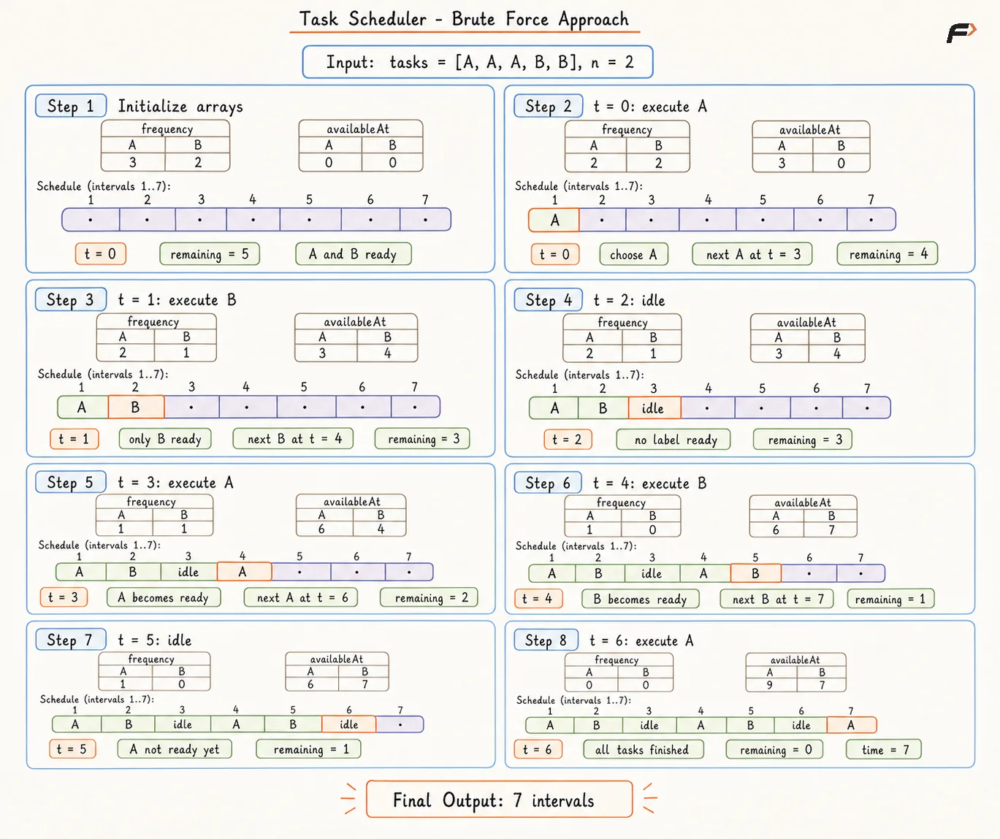
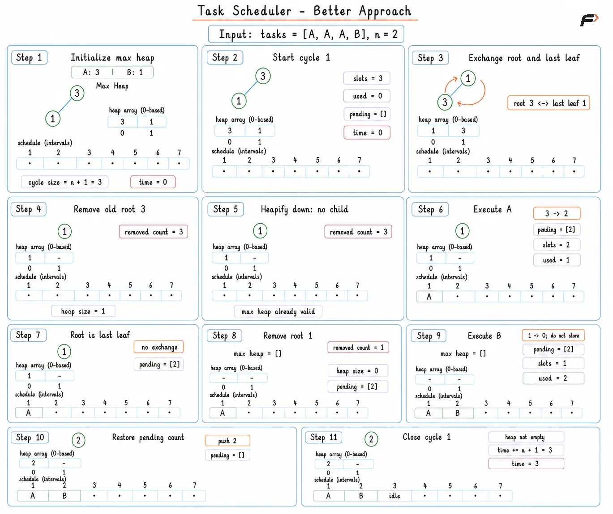
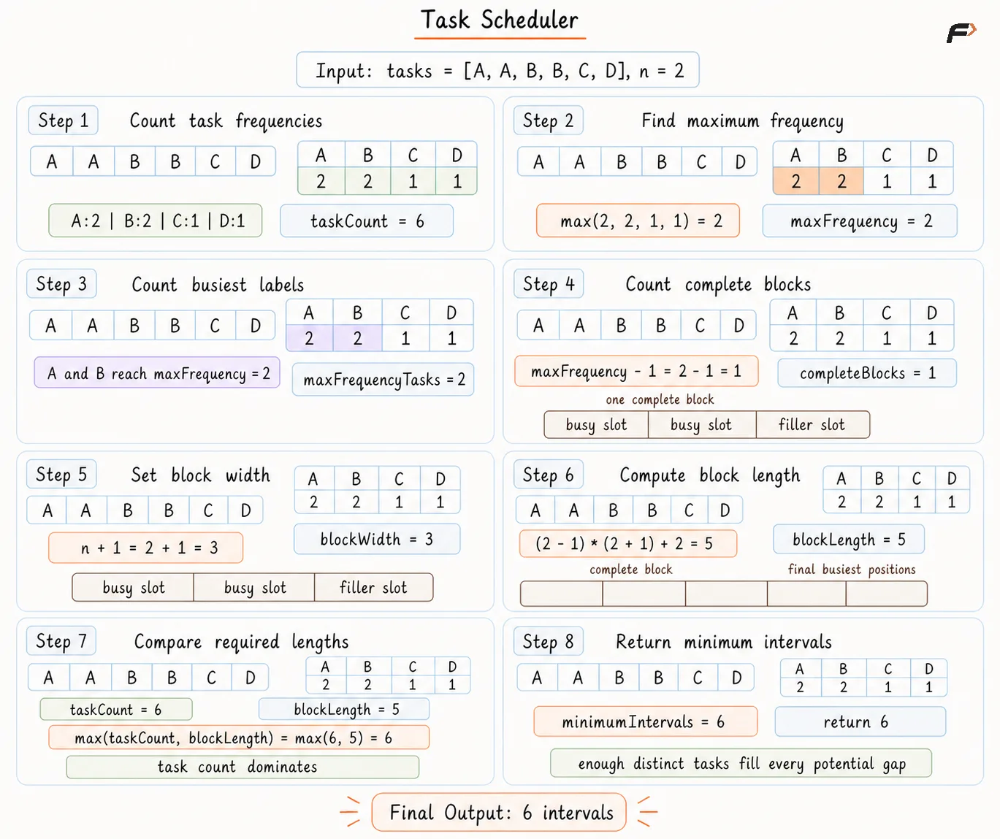

Task Scheduler: Minimum Intervals with Cooldown
Given an array tasks containing uppercase English letters and a non-negative integer n, schedule every task in any order. Each CPU interval can execute one task or remain idle. Two executions with the same label must have at least n intervals between both executions.
Return the minimum number of CPU intervals needed to finish every task, including any required idle intervals.
Example 1
Input: tasks = ["A", "A", "A", "B", "B", "B"], n = 2
Output: 8
Explanation: One shortest schedule is A, B, idle, A, B, idle, A, B. Every pair of equal tasks has two intervening intervals.
Example 2
Input: tasks = ["A", "A", "B"], n = 0
Output: 3
Explanation: A zero cooldown permits consecutive equal tasks, so A, A, B finishes without idle time.
Brute Force Approach
A direct simulation can build the schedule one interval at a time. A frequency array records unfinished copies, while an availability array records the earliest legal interval for every task label.
Every interval scans all 26 labels and selects the ready label with the largest remaining frequency. Giving early positions to frequent labels spreads repeated copies across the schedule and avoids unnecessary idle time.
Algorithm
Begin with a frequency array of size 26 so every unfinished task copy remains visible during the simulation.
Keep an
availableAtarray initialized to interval1, allowing every present label to run at the first simulated interval.Scan all task labels at every interval so only unfinished and legally available work can compete for the next position.
Select the ready label with the largest remaining frequency because frequent labels need the most future cooldown gaps.
Execute the selected label and move the next legal time forward by
n + 1, so the required cooldown remains protected.Advance one interval without executing a task if no label is ready, because the cooldown restriction forces an idle position.
Keep the elapsed interval count as the answer because every task and forced idle position contributes one interval.
Dry Run

Task Scheduler - Brute Force Approach
Solution
#include <bits/stdc++.h>
using namespace std;
class Solution {
public:
// Finds the minimum schedule length
int leastInterval(vector<char>& tasks, int n) {
// Store unfinished copies for every task label
vector<int> frequency(26, 0);
// Count each task before schedule simulation
for (char task : tasks) {
frequency[task - 'A']++;
}
// Store the next legal interval for each label
vector<int> availableAt(26, 0);
int time = 0;
int remaining = tasks.size();
// Continue until every task copy is scheduled
while (remaining > 0) {
int chosen = -1;
// Inspect every label for a ready frequent task
for (int index = 0; index < 26; index++) {
// A ready label can enter the current interval
if (frequency[index] > 0 &&
availableAt[index] <= time) {
// Larger remaining work receives priority
if (chosen == -1 ||
frequency[index] > frequency[chosen]) {
chosen = index;
}
}
}
// No ready label forces one idle interval
if (chosen == -1) {
time++;
continue;
}
// Execute one copy during the current interval
frequency[chosen]--;
remaining--;
// Reuse becomes legal after n full intervals
availableAt[chosen] = time + n + 1;
time++;
}
// Elapsed intervals include every forced idle slot
return time;
}
};
// Driver code
int main() {
vector<char> tasks = {'A', 'A', 'A', 'B', 'B', 'B'};
int n = 2;
Solution obj;
cout << obj.leastInterval(tasks, n) << endl;
return 0;
}Complexity Analysis
Time Complexity: O(A × k), where A is the total number of intervals in the final schedule and k is the number of distinct task labels, because every simulated interval scans all k labels. In the worst case, A can grow to O(M × (n + 1)), where M is the total number of tasks and n is the cooldown period.
Space Complexity: O(k), because the frequency and availability arrays store one entry for each distinct task label.
Better Approach
The repeated 26-label scan can be replaced by a max heap. The largest remaining frequency stays at the top, so the next useful task becomes available without a full search.
A group of n + 1 intervals forms one safe cycle because any label can appear at most once inside the group. Unfinished frequencies return to the heap only after the cycle ends, preventing an early repeat.
Algorithm
Begin with a frequency array and place every positive count in a max heap so the largest remaining workload stays immediately accessible.
Start a cycle with
n + 1available slots because equal labels placed in consecutive cycles receive the required separation.Remove up to
n + 1heap entries and save unfinished counts outside the heap so one label cannot run twice inside the same cycle.Keep removed counts away from the heap until the current cycle ends, preventing the same label from entering one cycle twice.
Restore every unfinished count after the cycle so the next cycle again starts with the largest remaining workload.
Add only the used slot count for the final cycle because no idle suffix is needed after all tasks finish.
Add the full
n + 1cycle length while more work remains because unused positions inside an unfinished schedule are forced idle intervals.Keep the accumulated interval count as the answer because every completed cycle contributes task slots and forced idle slots.
Dry Run

Diagram 1
Solution
#include <bits/stdc++.h>
using namespace std;
class Solution {
public:
// Finds the minimum schedule length
int leastInterval(vector<char>& tasks, int n) {
// Count every task label before heap creation
vector<int> frequency(26, 0);
for (char task : tasks) {
frequency[task - 'A']++;
}
// Keep the largest unfinished count on top
priority_queue<int> maxHeap;
for (int count : frequency) {
// Only present task labels belong in the heap
if (count > 0) {
maxHeap.push(count);
}
}
int time = 0;
// Process one safe cooldown cycle at a time
while (!maxHeap.empty()) {
vector<int> pending;
int slots = n + 1;
int used = 0;
// Execute distinct labels inside the cycle
while (slots > 0 && !maxHeap.empty()) {
int count = maxHeap.top();
maxHeap.pop();
// One execution removes one unfinished copy
count--;
used++;
slots--;
// Positive counts need a later cycle
if (count > 0) {
pending.push_back(count);
}
}
// Restore labels only after the cycle closes
for (int count : pending) {
maxHeap.push(count);
}
// A final cycle needs no idle suffix
if (maxHeap.empty()) {
time += used;
} else {
time += n + 1;
}
}
// Accumulated cycles contain tasks and forced idles
return time;
}
};
// Driver code
int main() {
vector<char> tasks = {'A', 'A', 'A', 'B', 'B', 'B'};
int n = 2;
Solution obj;
cout << obj.leastInterval(tasks, n) << endl;
return 0;
}Complexity Analysis
Time Complexity: O(M log k), where M is the total number of tasks and k is the number of distinct task labels, because each task may enter and leave a heap containing at most k labels.
Space Complexity: O(k), because the frequency array, heap, and pending list store at most one entry for each distinct task label.
Optimal Approach
Heap simulation can be skipped after identifying the labels responsible for forced gaps. A label with maximum frequency maxFrequency creates maxFrequency - 1 complete blocks, and every complete block needs n + 1 positions.
Several labels can share the maximum frequency. Every such label contributes one position after the complete blocks. A schedule with enough different tasks needs no idle time, so the larger value between the block length and the task count gives the answer.
Algorithm
Begin with a frequency array of size 26 so the workload of every task label can be counted in one pass.
Find
maxFrequencyamong all counts because the most repeated labels create the strongest cooldown restriction.Count
maxFrequencyTasks, the number of labels reachingmaxFrequency, because every tied label occupies the final block.Form
maxFrequency - 1complete blocks because the last occurrence of each most frequent label needs no following cooldown.Give every complete block
n + 1positions so consecutive copies of a most frequent label receivenintervening intervals.Add
maxFrequencyTasksfor the tied final occurrences so every busiest label receives a valid ending position.Compare the block-driven length with the total task count so plentiful distinct tasks can replace all potential idle positions.
Dry Run

task-scheduler-optimal-edge-case
Solution
#include <bits/stdc++.h>
using namespace std;
class Solution {
public:
// Finds the minimum schedule length
int leastInterval(vector<char>& tasks, int n) {
// Count every task label
vector<int> frequency(26, 0);
for (char task : tasks) {
frequency[task - 'A']++;
}
// Find the strongest cooldown bottleneck
int maxFrequency = 0;
for (int count : frequency) {
maxFrequency = max(maxFrequency, count);
}
// Count labels sharing the strongest bottleneck
int maxFrequencyTasks = 0;
for (int count : frequency) {
// Every tied label needs a final position
if (count == maxFrequency) {
maxFrequencyTasks++;
}
}
// Complete blocks preserve all cooldown gaps
int blockLength =
(maxFrequency - 1) * (n + 1) +
maxFrequencyTasks;
// Total tasks dominate after all idle gaps fill
return max((int) tasks.size(), blockLength);
}
};
// Driver code
int main() {
vector<char> tasks = {'A', 'A', 'A', 'B', 'B', 'B'};
int n = 2;
Solution obj;
cout << obj.leastInterval(tasks, n) << endl;
return 0;
}Complexity Analysis
Time Complexity: O(M + k), where M is the total number of tasks and k is the number of possible task labels. One pass counts all M tasks, and two short scans inspect the k labels.
Space Complexity: O(k), because the frequency array stores one count for each task label. Since uppercase English letters limit k to 26, the auxiliary space is effectively O(1).
Interview follow-up Questions
No. The canonical Task Scheduler variant permits any execution order, so frequency-based rearrangement is valid.